Hydrocarbons are compounds containing only carbon and hydrogen. They are the most important sources of energy (LPG, CNG, petrol, diesel, kerosene) and are used in manufacture of polymers, dyes, drugs and solvents.
LPG = Liquefied Petroleum Gas · CNG = Compressed Natural Gas · LNG = Liquefied Natural Gas
Fig. 9.0 — Classification tree of hydrocarbons
| Type | General Formula | Bonds Present | Examples |
|---|---|---|---|
| Alkanes (Saturated) | CnH2n+2 | C–C and C–H single bonds only | CH4, C2H6, C3H8 |
| Cycloalkanes | CnH2n | C–C single bonds in a ring | Cyclopropane, Cyclohexane |
| Alkenes (Unsaturated) | CnH2n | At least one C=C double bond | C2H4, C3H6 |
| Alkynes (Unsaturated) | CnH2n–2 | At least one C≡C triple bond | C2H2, C3H4 |
| Aromatic | Variable | Delocalised π electrons; (4n+2)π rule | Benzene C6H6, Toluene, Naphthalene |
Alkanes are saturated open-chain hydrocarbons with only C–C and C–H single bonds. General formula: CnH2n+2. Earlier called paraffins (Latin: parum = little, affinis = affinity) because they are largely inert.
First member: Methane (CH4) — found in coal mines and marshy places.
Methane, ethane, and propane each have only one possible structure. From butane onwards, multiple structural isomers exist.
| Step | Rule | Example |
|---|---|---|
| 1 | Find the longest continuous carbon chain (parent chain) | For CH₃–CH₂–CH(CH₃)–CH₃ Longest chain = 4 carbons → butane |
| 2 | Number the chain to give lowest numbers to substituents | Number from either end, choose direction giving smaller locant |
| 3 | Name and number the substituents (alkyl groups) | –CH₃ at position 2 → 2-methyl |
| 4 | Use prefixes for multiple identical substituents | di-, tri-, tetra-, penta-, hexa- |
| 5 | Arrange substituents in alphabetical order | ethyl comes before methyl (ignore prefixes di, tri, etc.) |
| 6 | Write complete name: substituents + parent alkane | 2-methylbutane |
| Formula | Name | Structure (SVG) | Alternative Name |
|---|---|---|---|
| –CH₃ | Methyl | — | |
| –CH₂CH₃ | Ethyl | — | |
| –CH₂CH₂CH₃ | Propyl | n-propyl | |
| –CH(CH₃)₂ | Isopropyl | sec-propyl | |
| –CH₂CH₂CH₂CH₃ | Butyl | n-butyl | |
| –CH(CH₃)CH₂CH₃ | sec-Butyl | secondary butyl | |
| –C(CH₃)₃ | tert-Butyl | tertiary butyl |
Question: Write structures of different chain isomers of alkanes corresponding to the molecular formula C₆H₁₄. Also write their IUPAC names.
Question: Write structures of different isomeric alkyl groups corresponding to the molecular formula C₅H₁₁. Write IUPAC names of alcohols obtained by attachment of –OH groups at different carbons of the chain.
| Alkyl Group Structure (C₅H₁₁) | Corresponding Alcohol | IUPAC Name |
|---|---|---|
| CH₃–CH₂–CH₂–CH₂–CH₂– | CH₃–CH₂–CH₂–CH₂–CH₂–OH | Pentan-1-ol |
| CH₃–CH(CH₂–CH₂–CH₃)– | CH₃–CH(OH)–CH₂–CH₂–CH₃ | Pentan-2-ol |
| CH₃–CH₂–CH(CH₂–CH₃)– | CH₃–CH₂–CH(OH)–CH₂–CH₃ | Pentan-3-ol |
| CH₃–CH(CH₃)–CH₂–CH₂– | CH₃–CH(CH₃)–CH₂–CH₂–OH | 3-Methylbutan-1-ol |
| CH₃–CH₂–CH(CH₃)–CH₂– | CH₃–CH₂–CH(CH₃)–CH₂–OH | 2-Methylbutan-1-ol |
| CH₃–C(CH₃)(CH₂–CH₃)– | CH₃–C(CH₃)(OH)–CH₂–CH₃ | 2-Methylbutan-2-ol |
| CH₃–C(CH₃)₂–CH₂– | CH₃–C(CH₃)₂–CH₂–OH | 2,2-Dimethylpropan-1-ol |
| CH₃–CH(CH₃)–CH(CH₃)– | CH₃–CH(CH₃)–CH(OH)–CH₃ | 3-Methylbutan-2-ol |
Number the parent carbon chain from the end that gives the lowest possible locants (numbers) to the substituents.
When multiple substituents are present, list them alphabetically. Prefixes like sec- and tert- are ignored, but iso- and neo- are considered.
Use di-, tri-, tetra- etc. for multiple identical substituents. List all position numbers.
Always select the longest continuous carbon chain as the parent chain, even if it's not straight.
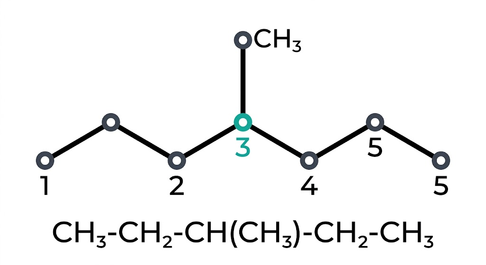
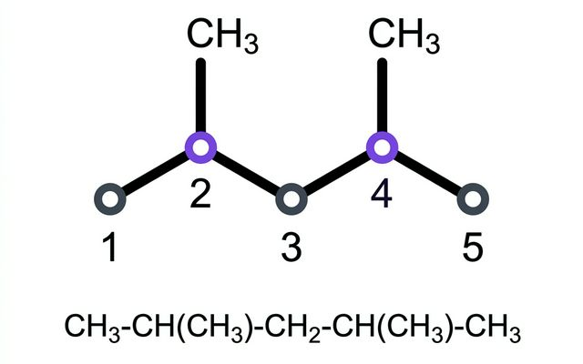
| Molecular Formula | No. of Isomers | IUPAC Names |
|---|---|---|
| C4H10 | 2 | Butane (n-butane); 2-Methylpropane (isobutane) |
| C5H12 | 3 | Pentane; 2-Methylbutane (isopentane); 2,2-Dimethylpropane (neopentane) |
| C6H14 | 5 | Hexane; 2-Methylpentane; 3-Methylpentane; 2,3-Dimethylbutane; 2,2-Dimethylbutane |
| C7H16 | 9 | — |
| C10H22 | 75 | — |
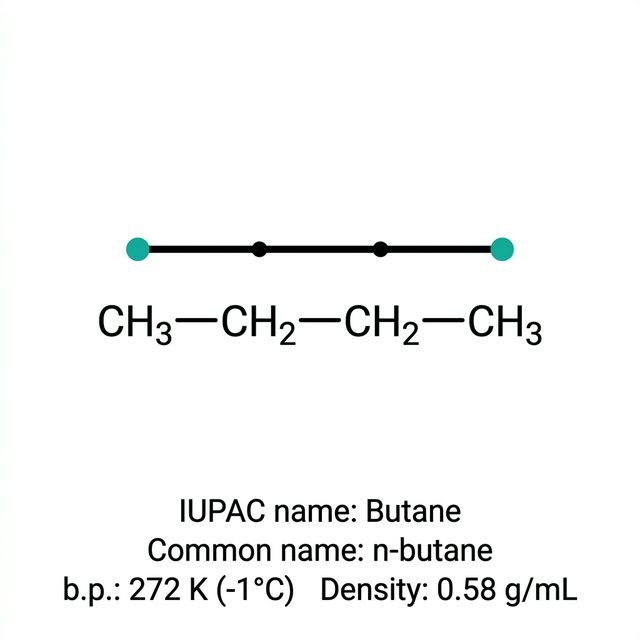
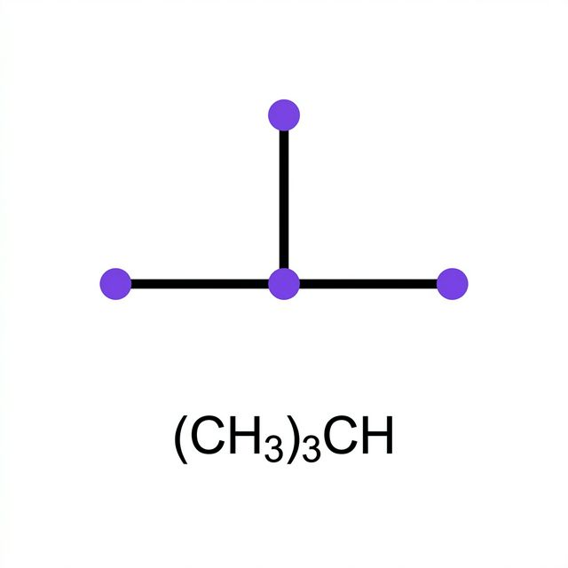
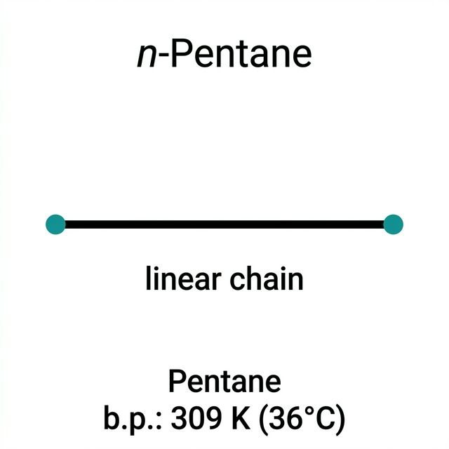
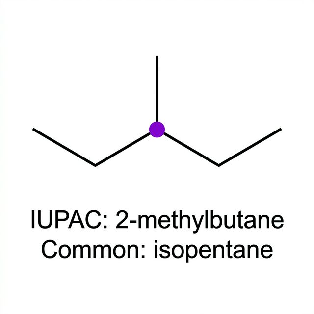
| Type | Attached to how many C atoms | Symbol | Example in 2-Methylpropane |
|---|---|---|---|
| Primary (1°) | 1 (or 0 as in methane) | 1° | Terminal –CH3 groups |
| Secondary (2°) | 2 | 2° | –CH2– groups in chain |
| Tertiary (3°) | 3 | 3° | –CH– at branch point |
| Quaternary (4°) | 4 | 4° (neo) | –C– with no H; e.g. in neopentane |
Three-dimensional representation showing tetrahedral geometry and linear chain structure

Petroleum and natural gas are the main sources of alkanes. However, they can be prepared in the laboratory by the following methods:
Dihydrogen gas adds to alkenes and alkynes in the presence of finely divided catalysts like platinum (Pt), palladium (Pd), or nickel (Ni). This process is called catalytic hydrogenation.
Alkyl halides (except fluorides) on reduction with zinc and dilute hydrochloric acid give alkanes.
Alkyl halides on treatment with sodium metal in dry ether solution give higher alkanes (usually with even number of carbon atoms).
If a mixture of two different alkyl halides is used, a mixture of three different alkanes is formed, which is difficult to separate. Hence, it is not preferred for preparing alkanes with odd number of carbons.
Sodium salts of carboxylic acids on heating with soda lime (mixture of NaOH and CaO in 3:1 ratio) give alkanes containing one carbon less than the parent acid.
An aqueous solution of sodium or potassium salt of a carboxylic acid on electrolysis gives an alkane containing even number of carbon atoms at the anode.
| Starting Material | Method / Reagents | Key Product Note |
|---|---|---|
| Alkenes / Alkynes | H₂ / Pt, Pd or Ni (Hydrogenation) | Simple addition of hydrogen |
| Alkyl Halides | Zn / dil. HCl (Reduction) | Replacement of Halogen by H |
| Alkyl Halides | Na / dry ether (Wurtz) | Chain doubling (Even carbons) |
| Carboxylic acid salt | NaOH + CaO, Heat (Decarboxylation) | One carbon less than parent |
| Carboxylic acid salt | Electrolysis (Kolbe's) | Even number of carbons |
| Name | Formula | Molar Mass (g/mol) | Melting Point (K) | Boiling Point (K) | Density (g/cm³) at 293K | State at 298K |
|---|---|---|---|---|---|---|
| Methane | CH₄ | 16.04 | 90.7 | 111.7 | 0.000 67* | Gas |
| Ethane | C₂H₆ | 30.07 | 90.4 | 184.6 | 0.001 26* | Gas |
| Propane | C₃H₈ | 44.10 | 85.5 | 231.1 | 0.001 83* | Gas |
| Butane | C₄H₁₀ | 58.12 | 134.6 | 272.4 | 0.579 | Gas |
| 2-Methylpropane | C₄H₁₀ | 58.12 | 114.7 | 261.0 | 0.549 | Gas |
| Pentane | C₅H₁₂ | 72.15 | 143.3 | 309.1 | 0.626 | Liquid |
| 2-Methylbutane | C₅H₁₂ | 72.15 | 113.1 | 300.9 | 0.620 | Liquid |
| 2,2-Dimethylpropane | C₅H₁₂ | 72.15 | 256.4 | 282.5 | 0.614 | Liquid |
| Hexane | C₆H₁₄ | 86.18 | 178.5 | 341.9 | 0.659 | Liquid |
| Decane | C₁₀H₂₂ | 142.28 | 243.3 | 447.1 | 0.730 | Liquid |
| Eicosane | C₂₀H₄₂ | 282.55 | 309.6 | 617 | 0.789 | Solid |
* Gas density at STP (273K, 1 atm)
Alkanes are generally unreactive towards ionic reagents due to:
However, they undergo free radical reactions at high temperature or in presence of UV light.
| Reaction Type | Conditions | Chemical Equations (Balanced) | Key Observations |
|---|---|---|---|
| 1. Substitution | hν (UV) or 573–773 K |
CH₄ + Cl₂ →
CH₃Cl + HCl
Sequence:
CH₄ → CH₃Cl → CH₂Cl₂ → CHCl₃ → CCl₄ |
• Halogenation: F₂ > Cl₂ > Br₂ > I₂ • Iodination: Reversible. Requires oxidizing agent (HIO₃ or HNO₃). • Others: Alkanes also undergo Nitration & Sulphonation at high temp. |
| Oxidation & Combustion Processes | |||
| 2. Combustion | Air / O₂, Heat |
CH₄ + 2O₂ → CO₂
+ 2H₂O
General:
CₙH₂ₙ₊₂ + (3n+1)/2 O₂ → nCO₂ + (n+1)H₂O |
• ΔH: Highly exothermic • Incomplete combustion → Carbon Black (C) |
| 3. Controlled Oxidation | Limit O₂, Catalyst |
2CH₄ + O₂ [Cu/523K/100atm] → 2CH₃OH (Methanol)
CH₄ + O₂ [Mo₂O₃/Δ] → HCHO + H₂O (Methanal)
2C₂H₆ + 3O₂ [(CH₃COO)₂Mn/Δ] → 2CH₃COOH + 2H₂O
3° H Atom: Oxidized by KMnO₄ to alcohols.
|
• Highly specific to catalyst. • Mn-acetate gives Ethanoic acid. • KMnO₄ oxidizes 2-methylpropane to 2-methylpropan-2-ol. |
| Structural & Thermal Transformations | |||
| 4. Isomerisation | AlCl₃ / HCl |
n-alkanes → branched alkanes (Isomers)
n-Hexane → 2-methylpentane + 3-methylpentane
|
• Major products are reported. • Increases performance of fuels. |
| 5. Aromatisation | Cr₂O₃/V₂O₅/Mo₂O₃, 773K, 10-20 atm |
n-C₆H₁₄ → Benzene (C₆H₆) + 4H₂ n-C₇H₁₆ → Toluene (C₆H₅CH₃) |
• Also called Reforming. • Alkane must have ≥ 6 carbons. • Involves Dehydrogenation & cyclization. |
| Industrial Processes & Cracking | |||
| 6. Reaction with Steam | Ni, 1273 K | CH₄ + H₂O → CO + 3H₂ | • Industrial method to produce H₂ gas (Syngas). |
| 7. Pyrolysis | Δ (973 K for Alkanes) |
C₆H₁₄ → C₆H₁₂ + C₄H₈ + C₂H₆ + C₂H₄ + CH₄
Higher Alkanes:
C₁₂H₂₆ [Pt/Pd/Ni] → C₇H₁₆ + C₅H₁₀ + other products |
• Cracking of large molecules. • Dodecane example (Kerosene oil) shows its utility. |
UV light breaks Cl–Cl bond homolytically to produce highly reactive chlorine free radicals.
Chain reaction: Each step produces a new radical to continue the cycle.
Chain termination: Free radicals combine to form stable molecules.
Conformations (Conformers / Rotamers): Different spatial arrangements of atoms in a molecule that can be interconverted by rotation around a C–C single bond. Alkanes can have infinite conformations, but rotation is NOT completely free — hindered by torsional strain (1–20 kJ/mol).
Torsional strain: Weak repulsive interaction between electron clouds of adjacent C–H bonds that resist rotation.
Dihedral angle (torsional angle): The angle of rotation about the C–C bond.
H atoms on adjacent carbons are as close together as possible (0° dihedral angle). Maximum electron cloud repulsion → maximum torsional strain → least stable.
H atoms are as far apart as possible (60° dihedral angle). Minimum repulsion → minimum torsional strain → most stable. Preferred conformation.
Any intermediate conformation = Skew conformation. Energy difference between eclipsed and staggered = 12.5 kJ/mol (small enough that free rotation occurs at room temperature).
View along C–C axis. C–C drawn as a long diagonal line. Front carbon at lower end, rear carbon at upper end. Each C has 3 lines for H at 120°.
View at C–C bond head-on. Front carbon = central point; rear carbon = circle. Each has 3 H-bonds at 120°. Eclipsed: H overlaps; Staggered: H at 60° to each other.

Fig. 9.2: Sawhorse projections of ethane (eclipsed and staggered)

Fig. 9.3: Newman projections of ethane (eclipsed and staggered)
Alkenes are unsaturated hydrocarbons containing at least one C=C double bond. General formula: CnH2n. Also called olefins (oil-forming) because ethylene forms an oily liquid with Cl2. First stable member: Ethene (C2H4).
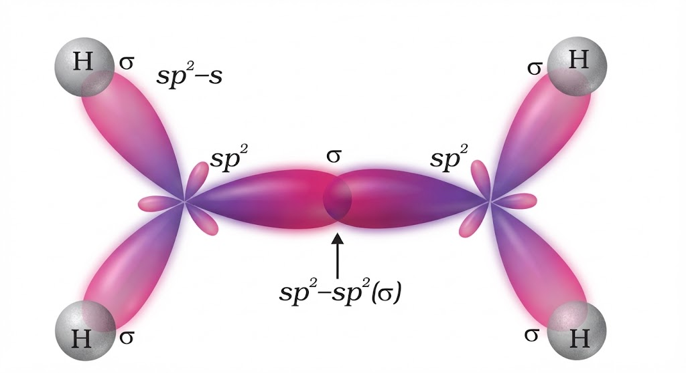
Fig. 9.4: Orbital picture of ethene depicting sigma bonds only
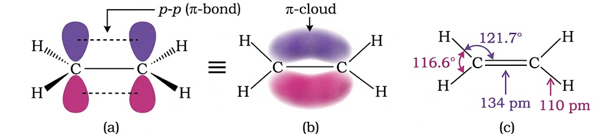
Fig. 9.5: Orbital picture of ethene showing pi bond, pi cloud, bond angles and bond length
| Structure | IUPAC Name |
|---|---|
| CH3–CH=CH2 | Propene |
| CH3–CH2–CH=CH2 | But-1-ene |
| CH3–CH=CH–CH3 | But-2-ene |
| CH2=CH–CH=CH2 | Buta-1,3-diene |
| CH2=C(CH3)–CH3 | 2-Methylprop-1-ene |
| CH2=CH–CH(CH3)–CH3 | 3-Methylbut-1-ene |
Alkenes show both structural isomerism and geometrical isomerism.
As in alkanes, ethene (C2H4) and propene (C3H6) have only one structure, but alkenes higher than propene show multiple structures.
| Structure | Name | Type of Isomerism |
|---|---|---|
| CH2=CH–CH2–CH3 | But-1-ene | Position isomers (I vs II) |
| CH3–CH=CH–CH3 | But-2-ene | Position isomers (I vs II) |
| CH2=C(CH3)2 | 2-Methylprop-1-ene | Chain isomers (I or II vs III) |
Write structures and IUPAC names of structural isomers corresponding to C5H10.
Occurs when rotation about C=C is restricted. If each doubly bonded carbon has two different groups, two spatial arrangements are possible:
Condition for cis-trans isomerism: Both doubly bonded carbons must each carry two DIFFERENT substituents. If either carbon carries two identical groups → no cis-trans isomerism.
cis-trans isomers are stereoisomers with the same structural formula but different spatial arrangement. Rotation about C=C is restricted, so interconversion does not happen by simple bond rotation.
Doubly bonded carbon atoms satisfy the remaining valencies by joining with two atoms/groups. If the two groups attached to each carbon are different, they can be represented by YX C = C XY type structure.
This YX C = C XY arrangement can be represented in space in the following two ways:
(a) and (b) represent the two different spatial arrangements that give geometrical isomers.
Geometrical isomerism is commonly represented by these patterns:
Draw cis and trans isomers and write IUPAC names:
Which compounds show cis-trans isomerism?
Rule check: cis-trans isomerism appears only if each doubly bonded carbon has two different substituents.
Alkenes can be prepared by controlled elimination or partial reduction methods. Each process is shown below with reaction conditions, mechanism clue, and reaction-specific SVG representation.
Alkynes on reduction with one mole of H2 give alkenes. Below, expanded structural formulas are used (NCERT style) for clear product configuration.
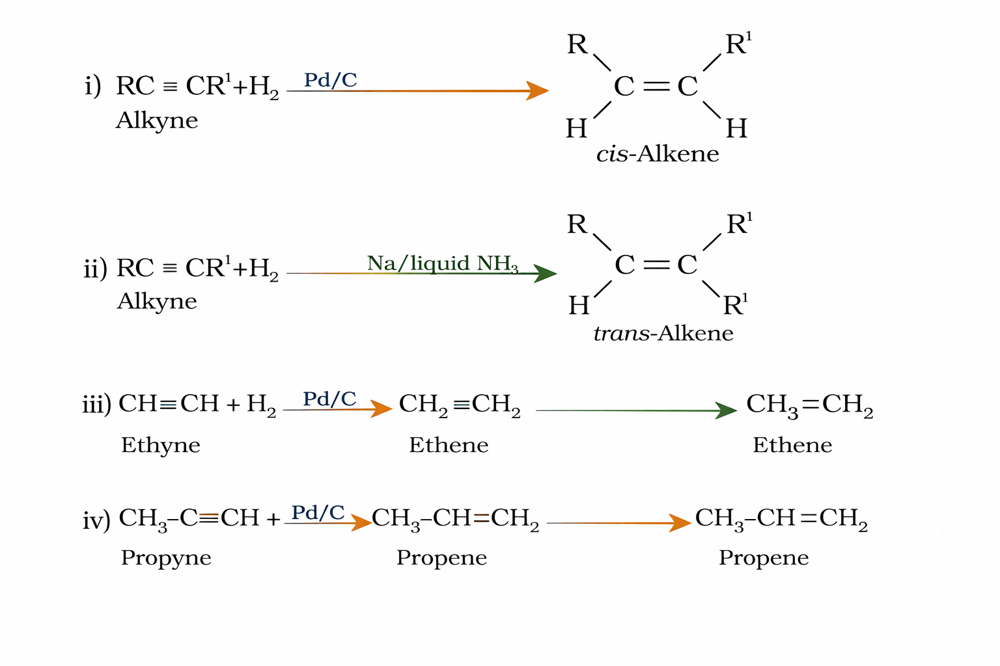
Fig. 9.30, 9.31: Partial reduction of alkynes to cis/trans alkenes
Concept check: Propene formed here does not show geometrical isomerism because one double-bond carbon has two identical H atoms.
Alkyl halides on heating with alcoholic KOH eliminate HX and form alkene. This is a β-elimination reaction.
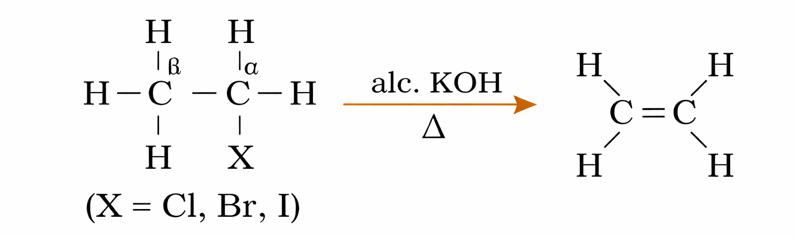
Fig. 9.34: Dehydrohalogenation of alkyl halides
Vicinal dihalides (halogens on adjacent carbons) react with Zn metal to eliminate ZnX2 and form alkenes. This is called dehalogenation.
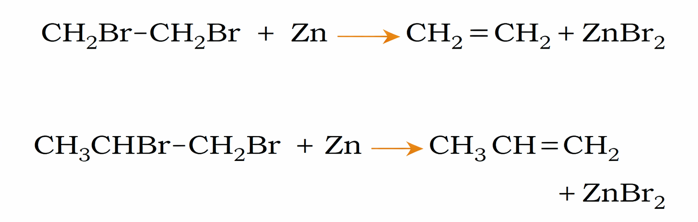
Fig. 9.35, 9.36: Dehalogenation of vicinal dihalides
On heating alcohols with concentrated H2SO4, one molecule of water is removed and alkene is formed. This is called acidic dehydration of alcohols (also a β-elimination process).
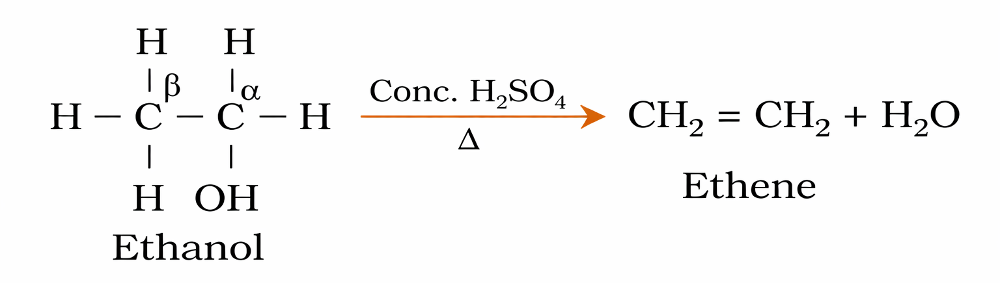
Fig. 9.37: Acidic dehydration of alcohols
Alkenes as a class resemble alkanes in physical properties, with the following important exceptions based on types of isomerism and differences in polar nature:
Alkenes are the rich source of loosely held π electrons due to the electron-rich C=C double bond. This makes them highly reactive. The π electrons are:
The reactions of alkenes are predominantly addition reactions in which electrophiles add on to the carbon–carbon double bond to form addition products. Some reagents also add by free radical mechanism. Additionally, oxidation and ozonolysis reactions are quite prominent in alkene chemistry.
General Reaction:
R₂C=CR₂ + H₂ —(Ni, Pd, or Pt catalyst)→ R₂CH–CHR₂
Example:
CH₂=CH₂ + H₂ —(Ni/Pt/Pd)→ CH₃–CH₃
Mechanism: This is a catalytic hydrogenation process involving:
Key Points:
General Reaction:
R₂C=CR₂ + X₂ → R₂CX–CXR₂ (vicinal dihalide)
Example:
CH₂=CH₂ + Br₂ —(CCl₄)→ CHBr–CHBr (1,2-dibromoethane)
Specific Halogen Behaviour:
Mechanism (Electrophilic Addition):
Reactivity Order and Applications:
General Reaction:
R₂C=CR₂ + HX → R₂CH–CXR₂ (alkyl halide)
Example:
CH₂=CH₂ + HBr → CH₃–CH₂Br (bromoethane)
Reactivity of Hydrogen Halides:
HI > HBr > HCl
(Order reflects H–X bond strength and ease of protonation: HI is easiest to dissociate, HCl is hardest)
⚠️ MARKOVNIKOV'S RULE (1869)
Statement: In the addition of an unsymmetrical reagent (H–X, where H ≠ X) to an unsymmetrical alkene, the negative/halide part (X⁻) attaches to the carbon atom which possesses the lesser number of hydrogen atoms.
Alternatively: The H attaches to the C with more H, and X attaches to the C with fewer H.
Mechanistic Explanation of Markovnikov Rule:
ELECTROPHILIC ADDITION MECHANISM
Detailed Example: Addition of HBr to Propene:
Discovery: Kharash and F.R. Mayo (1933) at the University of Chicago observed that HBr addition to unsymmetrical alkenes in the presence of peroxide takes place contrary to Markovnikov's rule.
General Reaction:
R₂C=CR₂ + HBr —(peroxide)→ R₂C(Br)–CR₂H (ANTI-Markovnikov product)
Example:
CH₃–CH=CH₂ + HBr —(peroxide)→ CH₃–CH₂–CH₂Br (1-Bromopropane — major)
Compare with Markovnikov (without peroxide): CH₃–CHBr–CH₃ (2-Bromopropane)
Key Observation: This effect is observed ONLY with HBr, not with HCl or HI!
Why Only HBr?
Mechanism: FREE RADICAL CHAIN MECHANISM
Initiation Step
Peroxide (R-O-O-R) —(heat)→ 2 R-O• (free radicals)
Propagation Steps
(i) R-O• + H-Br → R-O-H + Br•
(ii) Br• + C=C → (C-C)• (secondary free radical, more stable)
(iii) (C-C)• + H-Br → C-C-Br + Br•
Step (iii) regenerates Br•, continuing the chain reaction
Why Anti-Markovnikov?
Reaction:
R₂C=CR₂ + H₂SO₄ (conc., cold) → R₂CH–OSOH + Additional H₂SO₄ reaction
Example:
CH₃–CH=CH–CH₂ + H₂SO₄ → Alkyl hydrogen sulphate
Key Features:
General Reaction:
R₂C=CR₂ + H₂O —(dilute H₂SO₄ or H₃PO₄ catalyst)→ R₂CH–OHCR₂ (alcohol)
Example:
CH₂=CH₂ + H₂O —(H₂SO₄ catalyst)→ CH₃–CH₂OH (ethanol)
Reaction Conditions:
Markovnikov's Hydration:
In the hydration of unsymmetrical alkenes, the OH group attaches to the carbon with fewer H atoms (Markovnikov rule applies). For example:
CH₃–CH=CH₂ + H₂O → CH₃–CHOH–CH₃ (secondary alcohol — major) + CH₃–CH₂–CH₂OH (primary — minor)
Mechanism (Electrophilic Addition):
Hydration Mechanism Steps
Industrial Importance:
Reagent: Cold, dilute, aqueous KMnO₄ solution (Baeyer's reagent), at ~273 K (0°C)
Reaction:
R₂C=CR₂ + [O] (from dilute KMnO₄) → R₂C(OH)–C(OH)R₂ (vicinal diol / glycol)
Example:
CH₂=CH–CH=CH₂ + KMnO₄/(cold, dil.) → CH(OH)–CH(OH)–CH(OH)–CH(OH) (But-1,2,3,4-tetraol)
Products:
Test for Unsaturation:
The rapid decolourisation of purple/pink KMnO₄ solution (colour change to colourless or brown) is used as a qualitative test for C=C unsaturation in organic compounds.
Stereochemistry:
Reagent: Acidified KMnO₄ or K₂Cr₂O₇ solutions under heating
Reaction:
• Oxidizing C=C bond cleavage occurs
• Products depend on structure of alkene
Product Formation:
Examples:
CH₃–CH=CH–CH₃ + KMnO₄/H⁺ → CH₃–CO–CH₃ (acetone/propanone) + no other products
CH₃–CH=CH₂ + KMnO₄/H⁺ → CH₃–CHO (acetaldehyde) + HCOOH (formic acid)
or further oxidation: CH₃–COOH + CO₂
Definition: Ozonolysis is the reaction of alkenes with ozone (O₃) followed by decomposition of the ozonide with reducing agents (e.g., Zn/H₂O) to isolate aldehydes and/or ketones.
General Reaction:
R₂C=CR₂ + O₃ → [R₂C–O–O–CR₂] (ozonide, primary adduct)
↓ (Zn/H₂O reduction)
R₂C=O + R₂C=O (carbonyl compounds)
Example 1: Propene
CH₃–CH=CH₂ + O₃ → [Ozonide]
[Ozonide] + Zn/H₂O → CH₃–CHO (Ethanal/Acetaldehyde) + HCHO (Formaldehyde/Methanal)
Example 2: 2-Methylpropene
(CH₃)₂C=CH₂ + O₃ → [Ozonide]
[Ozonide] + Zn/H₂O → (CH₃)₂C=O (Propanone/Acetone) + HCHO (Formaldehyde)
Key Points:
Mechanism (Overview):
Practical Application: Structure Determination
Ozonolysis is highly useful for determining the position of double bonds in unknown alkenes.
Note on Alternative Workup:
Definition: Polymerisation is the process in which a large number of simple unsaturated molecules (monomers) combine together through repeated addition reactions to form a single giant molecule (polymer).
General Reaction:
n(CH₂=CHR) —(High T, High P, catalyst)→ –(CH₂–CHR)–n (Polymer)
Examples of Addition Polymers:
1. Polythene (Polyethylene)
n(CH₂=CH₂) → –(CH₂–CH₂)–n
2. Polypropylene (Polypropene)
n(CH₃–CH=CH₂) (Propene/Propylene) → –(CH₃–CH–CH₂)–n
3. Polyvinyl Chloride (PVC)
n(CH₂=CHCl) → –(CH₂–CHCl)–n
Reaction Conditions:
Mechanism: Free Radical Addition Polymerisation
Polymerisation Steps
Industrial und Commercial Importance:
Environmental Note:
While addition polymers are extremely useful, their excessive use of fossil fuel-derived monomers and their persistence in the environment have raised concerns about waste management and sustainability. However, these polymers remain indispensable materials for modern society.
Alkynes are unsaturated hydrocarbons with at least one C≡C triple bond. General formula: CnH2n–2. First stable member: Ethyne (C2H2) — commonly called acetylene. Used for oxyacetylene welding.
Fig. 9.6 — Orbital picture of ethyne: (a) sigma overlaps forming the C–C and C–H bonds; (b) two pi bonds formed by lateral overlap of p orbitals
Suffix: –yne replaces –ane. In common system: derivatives of acetylene (e.g., methylacetylene).
| n | Formula | Common Name | IUPAC Name |
|---|---|---|---|
| 2 | C2H2 | Acetylene | Ethyne |
| 3 | C3H4 | Methylacetylene | Propyne |
| 4 | C4H6 | Ethylacetylene | But-1-yne |
| 4 | C4H6 | Dimethylacetylene | But-2-yne |
| # | Method | Reaction |
|---|---|---|
| 1 | From Calcium Carbide | CaCO3 →(Δ) CaO + CO2; CaO + 3C → CaC2 + CO; CaC2 + 2H2O → Ca(OH)2 + C2H2↑ (Industrial method) |
| 2 | From Vicinal Dihalides | R–CHX–CHX–R' + alc. KOH → alkenyl halide → + NaNH2 → alkyne (two steps of dehydrohalogenation) |
First 3 = gases; next 8 = liquids; higher = solids. All colourless; ethyne has characteristic odour. Weakly polar. Lighter than water; immiscible with water; soluble in organic solvents.
Terminal alkynes (H attached to triply bonded C) are acidic — they react with strong bases like Na metal and NaNH2 to liberate H2.
Reason: sp hybridised C (50% s character) is most electronegative → attracts C–H shared electrons more strongly → H is released as H⁺ more easily than in alkenes (sp²) or alkanes (sp³).
Note: But-2-yne (internal alkyne, CH3–C≡C–CH3) is NOT acidic — no H on triply bonded C!
Alkynes add up TWO molecules of the reagent (compared to one for alkenes). Addition in unsymmetrical alkynes follows Markovnikov rule.
| Reaction | Reagent | Product (Step 1 → Step 2) |
|---|---|---|
| (i) + H2 | Pt/Pd/Ni | HC≡CH + H2 → H2C=CH2 (Ethene) → + H2 → CH3–CH3 (Ethane) |
| (ii) + X2 | Br2/CCl4 | HC≡CH + Br2 → CHBr=CHBr (1,2-dibromo) → + Br2 → CHBr2–CHBr2 (1,1,2,2-tetrabromo) |
| (iii) + HX | HCl, HBr, HI | HC≡CH + HBr → CH2=CHBr (Bromoethene) → + HBr → CH3–CHBr2 (gem-dihalide: 1,1-dibromoethane) |
| (iv) + H2O | HgSO4/dil. H2SO4, 333 K | HC≡CH + H2O → CH2=CHOH (vinyl alcohol) → isomerisation → CH3CHO
(Ethanal/Acetaldehyde) CH3–C≡CH + H2O → CH3–CO–CH3 (Propanone/Acetone) |
| (v) Polymerisation | Suitable catalyst | Linear: → Polyacetylene (conducting polymer used in
batteries) Cyclic: 3 C2H2 → Benzene (red hot iron tube, 873 K) |
This is the best route from aliphatic to aromatic compounds.
Cyclic polymerisation of ethyne → benzene (aromatisation route from aliphatic to aromatic)
Aromatic hydrocarbons are also called arenes (from Greek aroma = pleasant smell). Most contain benzene ring. Benzenoids contain benzene ring; non-benzenoids don't (e.g. Tropone).
Fig. 9.7 — Orbital overlap and delocalised π electron cloud in benzene: (a) Kekulé A, (b) Kekulé B, (c) equal overlap (actual), (d) doughnut-shaped π clouds above and below the ring
Why benzene prefers substitution over addition:
Benzene's delocalised π electrons are attracted more strongly by the 6 carbon nuclei than localised electrons between 2 carbons. This extra stability (resonance energy) means benzene resists addition reactions (which would destroy delocalisation) and instead undergoes electrophilic substitution (which retains the aromatic ring).
X-Ray data: all C–C = 139 pm (intermediate between single 154 and double 134). No pure double bonds → explains resistance to addition.
A compound is aromatic if it satisfies ALL THREE conditions:
| Compound | n value | π electrons | Aromatic? |
|---|---|---|---|
| Benzene | n=1 | 6π | ✅ Yes |
| Cyclopentadienyl anion (C5H5⁻) | n=1 | 6π | ✅ Yes |
| Cycloheptatrienyl cation (C7H7⁺) | n=1 | 6π | ✅ Yes |
| Naphthalene | n=2 | 10π | ✅ Yes |
| Anthracene / Phenanthrene | n=3 | 14π | ✅ Yes |
| Cyclobutadiene | — | 4π (4n, n=1) | ❌ Anti-aromatic |
| Cyclohexadiene (non-planar ring) | — | Not fully delocalised | ❌ Not aromatic |
| Method | Reaction |
|---|---|
| Commercial | Isolated from coal tar (fractional distillation) |
| Cyclic polymerisation of ethyne | 3 HC≡CH →(Fe, 873 K)→ C6H6 |
| Decarboxylation of benzoic acid | C6H5COONa + NaOH →(CaO/Δ)→ C6H6 + Na2CO3 |
| Reduction of phenol | C6H5OH + Zn →(Δ)→ C6H6 + ZnO |
Arenes undergo electrophilic substitution (SE) reactions in which an electrophile (E⁺) replaces a hydrogen atom on the ring, retaining aromaticity. Three steps: (a) Generation of E⁺, (b) Formation of σ-complex (arenium ion), (c) Removal of H⁺ to restore aromaticity.
| Reaction | Reagents & Conditions | Electrophile Generated | Product | Eq. No. |
|---|---|---|---|---|
| 1. Nitration | Conc. HNO3 + Conc. H2SO4 (nitrating mixture), 323–333 K | NO2⁺ (Nitronium ion) | Nitrobenzene (C6H5NO2) | 9.72 |
| 2. Halogenation | Cl2 or Br2, anhydrous FeCl3/FeBr3/AlCl3 (Lewis acid) | Cl⁺ or Br⁺ | Chlorobenzene / Bromobenzene | 9.73 |
| 3. Sulphonation | Fuming H2SO4 (oleum), heat | SO3 (electrophilic) | Benzene sulphonic acid (C6H5SO3H) | 9.74 |
| 4. Friedel-Crafts Alkylation | Alkyl halide (R–X) + anhydrous AlCl3 | R⁺ (carbocation) | Alkylbenzene (e.g. Toluene with CH3Cl) | 9.75–9.76 |
| 5. Friedel-Crafts Acylation | Acyl halide (R–COX) or acid anhydride + AlCl3 | RCO⁺ (Acylium ion) | Acylbenzene (e.g. Acetophenone with CH3COCl) | 9.77–9.78 |
Mechanism of electrophilic nitration of benzene: generation of NO₂⁺ → σ-complex (arenium ion) → loss of H⁺ → nitrobenzene
When monosubstituted benzene undergoes further substitution, the incoming group is directed to specific positions (ortho, meta or para) based on the nature of the substituent already present — not on the nature of the incoming group.
Mechanism: These groups donate electrons into the ring via +R or +I effect → electron density increases at o- and p-positions → electrophile attacks o- and p-positions.
Examples: –OH, –NH2, –NHR, –NR2, –NHCOCH3, –OCH3, –CH3, –C2H5
Halogens are o- and p-directing but moderately deactivating (strong –I but +R effect increases density at o/p)
These groups make benzene ring MORE reactive toward electrophilic substitution.
Mechanism: These groups withdraw electrons from ring via –R or –I effect → electron density decreases more at o- and p-positions than at m-position → electrophile attacks the relatively electron-rich meta position.
Examples: –NO2, –CN, –CHO, –COR, –COOH, –COOR, –SO3H
These groups make benzene ring LESS reactive toward electrophilic substitution.
Phenol (–OH group): Resonance structures show high electron density at C-2, C-4, C-6 (ortho and para positions) → attack at o- and p-positions → o-nitrophenol + p-nitrophenol (major products)
Nitrobenzene (–NO2 group): –NO2 withdraws electrons strongly (–I and –R) → electron density decreases at o- and p-positions more than m → electrophile attacks m-position → m-dinitrobenzene (major)
Toluene (–CH3 group): +I effect of alkyl group + hyperconjugation → increased electron density at o- and p-positions → o-nitrotoluene + p-nitrotoluene (major)
Resonance structures of phenol: electron density builds up at o- and p-positions → ortho and para directing
| Substituent already on ring | Directing Effect | Activating/Deactivating? | Effect on ring reactivity |
|---|---|---|---|
| –OH, –NH2, –OCH3, –CH3 | o/p directing | Activating | Ring MORE reactive |
| –F, –Cl, –Br, –I (halogens) | o/p directing | Moderately deactivating | Ring less reactive |
| –NO2, –CN, –COOH, –CHO, –SO3H | m directing | Strongly deactivating | Ring much less reactive |
Benzene and polynuclear hydrocarbons (containing more than two fused benzene rings) are toxic and possess carcinogenic (cancer-causing) properties.
They are formed during incomplete combustion of organic materials like tobacco, coal and petroleum. They enter the human body, undergo biochemical reactions, damage DNA and cause cancer.
| Carcinogenic Hydrocarbon | Notes |
|---|---|
| 1,2-Benzanthracene | Polynuclear aromatic hydrocarbon; fused ring system |
| 3-Methylcholanthrene | Very potent carcinogen |
| 1,2-Benzpyrene | Found in cigarette smoke |
| 1,2,5,6-Dibenzanthracene | Strong carcinogen |
| 9,10-Dimethyl-1,2-benzanthracene | Potent carcinogen |
Use of polythene bags and polypropylene is also a concern — excessive use raises environmental issues.
| Property | Alkanes | Alkenes | Alkynes |
|---|---|---|---|
| General Formula | CnH2n+2 | CnH2n | CnH2n–2 |
| Hybridisation | sp³ | sp² (at C=C) | sp (at C≡C) |
| Bond angle | 109.5° | 120° | 180° |
| C–C bond length | 154 pm (single) | 134 pm (double) | 120 pm (triple) |
| Molecular shape | Tetrahedral at each C | Planar around C=C | Linear around C≡C |
| Characteristic reactions | Substitution (free radical) | Addition (electrophilic) | Addition (electrophilic); Acidic character |
| Test for unsaturation | No reaction with Br2/KMnO4 | Decolourises Br2/KMnO4 | Decolourises Br2/KMnO4 |
| Acidic character | None | None | Terminal H is acidic (sp C) |
| Isomerism | Chain, position | Chain, position, geometrical (cis-trans) | Chain, position |
| First stable member | Methane (CH4) | Ethene (C2H4) | Ethyne (C2H2) |